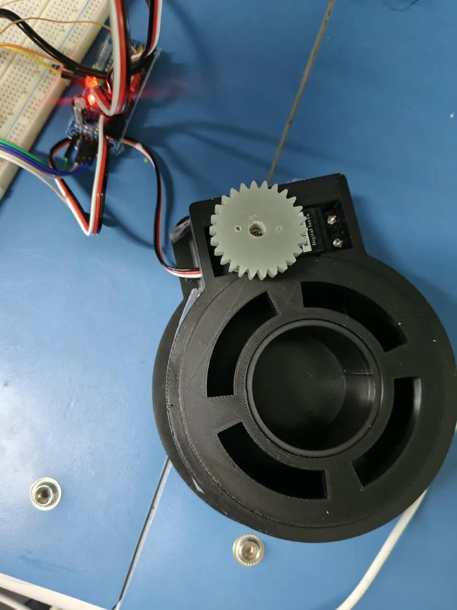
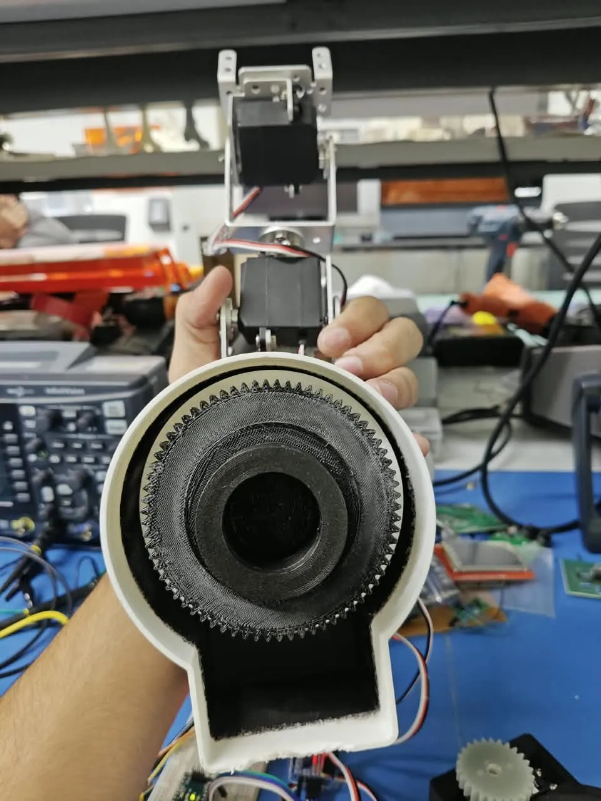
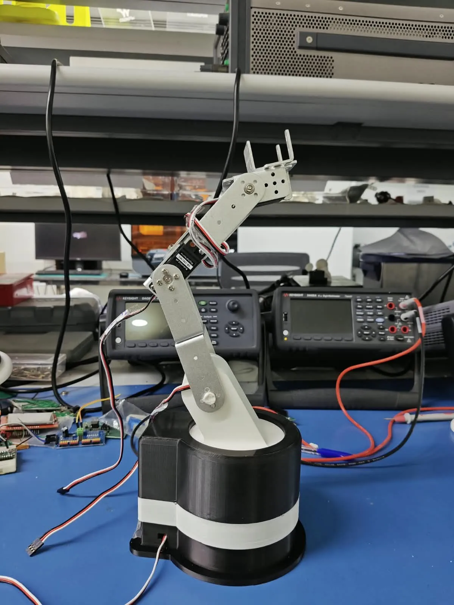
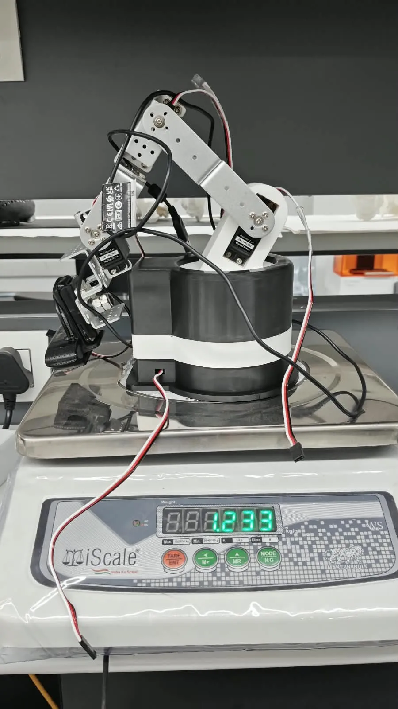
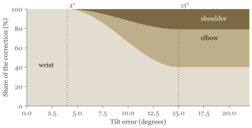
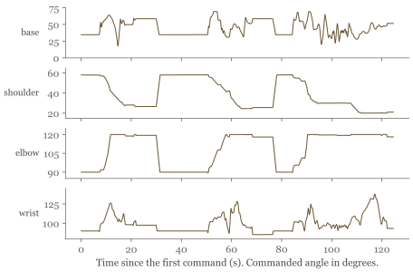
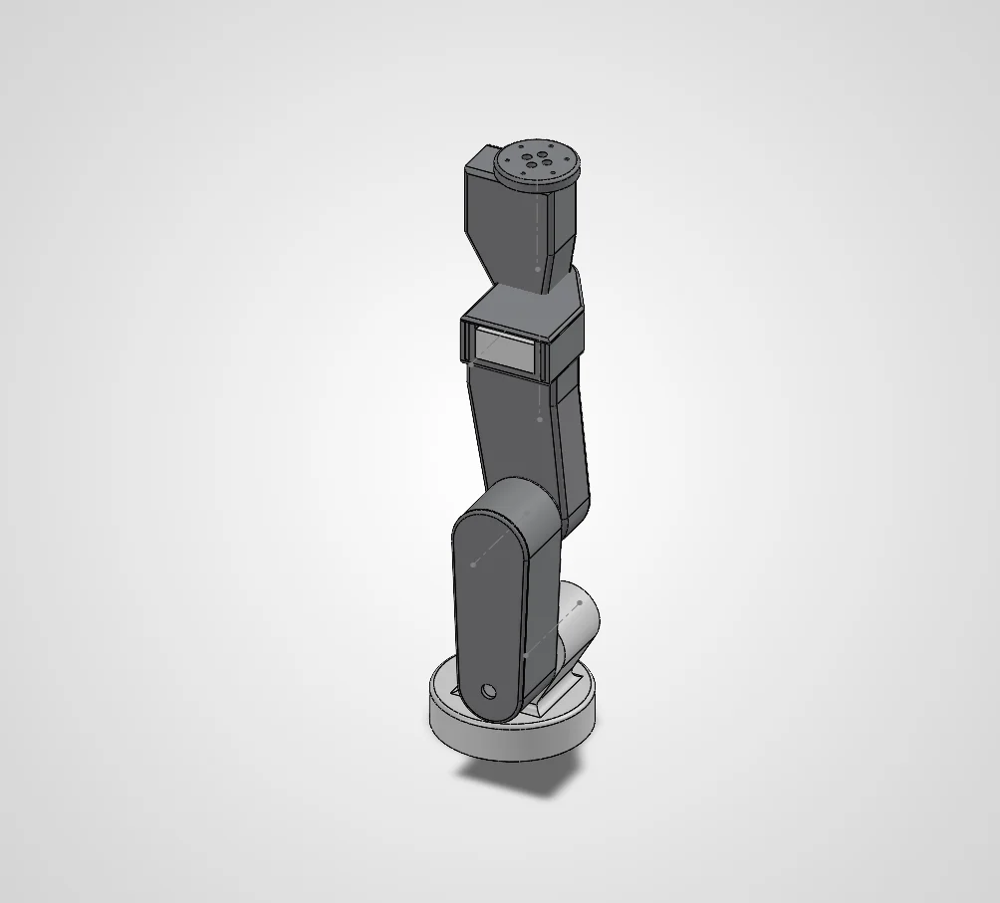
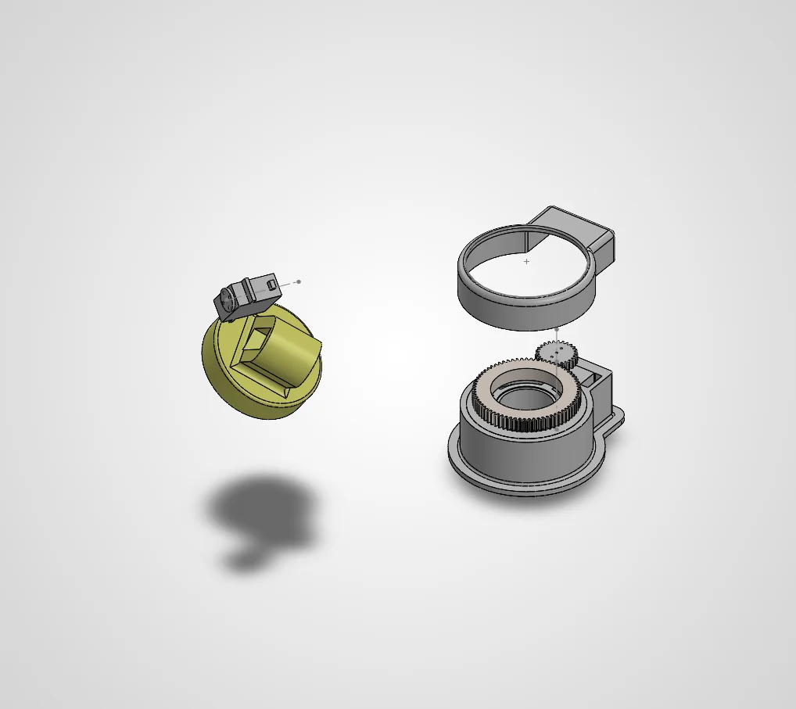
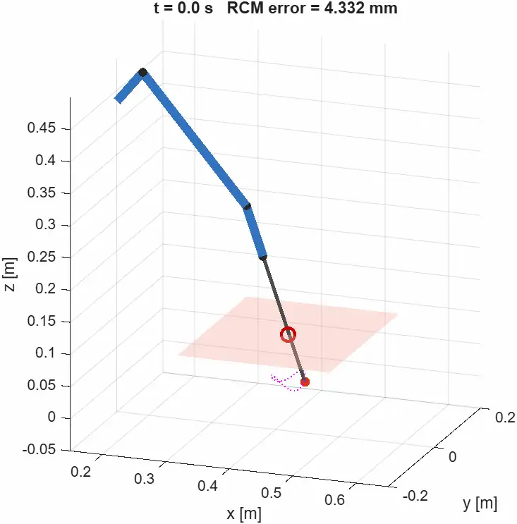

A vision-guided robot arm on servos with no encoders
A 4-DOF arm I designed and built to keep a wrist camera on a moving target. Its hobby servos report nothing back, so feedback has to come from cameras. It is groundwork for later research toward a medical arm, so the questions here are general ones: cheap actuation, visual servoing and estimating joint state.
- With
- Dr. Dinesh Kalyanasundaram (supervisor); Bavath D. and Yogesh Sahu (mentors)
- My part
- Mechanical design and build, firmware, tracking control, digital twin, MATLAB model, 6-DOF design
- Tools
- Python (OpenCV, MediaPipe, NumPy), Arduino, MATLAB, SolidWorks, FDM printing
- In numbers
- 4 DOF built · 30 Hz tracking loop · 100 Hz firmware motion profile · 1.233 kg
- Status
- Tracking runs on the arm. The digital twin is being improved, and joint error in degrees isn’t measured yet.
This page is a piano roll. Its keys run down the left edge: click one, or click the paper to punch a note. Scrolling plays it.

Where it stands
Part of this runs on the arm and part of it only in simulation or CAD. This table says which is which.
| Work | State | Evidence |
|---|---|---|
| 4-DOF arm: base yaw, shoulder, elbow, wrist pitch | On hardware | Photos and videos on this page. |
| Fingertip tracking with PD control (V1 to V3, July) | On hardware | My test runs. I kept no logs from these versions, so they have no error figures. |
| Eye-in-hand tracking with velocity control and coordinated tilt (October) | On hardware | Screen recording, 24 Oct 2026. Tracking error not measured yet. |
| Digital twin: live 3D view, load estimate, CSV logging | Being improved | Runs alongside tracking (recording and four logs, 24 Oct), but its 3D view is not yet in sync with the arm’s real pose. |
| Digital twin: measured joint angles | In progress | Calibration attempted on 24 Oct and not completed: markers were lost or read too much motion. |
| Joint angle from the servo’s own potentiometer | Written | Two one-servo test sketches from 19 Oct. No results recorded yet. |
| MATLAB dynamics model and controller comparison | Simulation | All 18 checks pass (re-run 5 Nov 2026), on placeholder masses and dimensions. |
| 6-DOF stage: upper-arm links and 5:1 cycloidal reducers | Designed | SolidWorks assemblies. Not built. |
The arm as built
A servo drives a pinion that meshes with a ring gear printed inside the base. That stage is 2.6:1 and reversed, so the servo’s full 0-180° becomes 0-69.2° at the joint, with home at 34.6°. Everything above it is direct drive on aluminium brackets.
| Joints | Base yaw, shoulder, elbow, wrist pitch; no gripper |
| Upper arm | 103.5 mm, shoulder to elbow |
| Forearm | 98 mm, elbow to wrist |
| Wrist to camera panel | 102 mm along, 68.5 mm across (modelled as one 123 mm link) |
| Servos | Standard metal-gear hobby servos, 1501MG class: 15.5 kg·cm stall and 0.16 s per 60° at 4.8 V, 17 kg·cm and 0.14 s per 60° at 6 V |
| Electronics | Arduino Nano and PCA9685 PWM driver; separate 5-6 V servo supply of at least 3 A |
| Wrist camera | Logitech C920, 640 × 480 at 30 fps, 62° horizontal field of view |
| Firmware | 100 Hz speed- and acceleration-limited profile; checksummed serial at 115200 baud |
| Mass | 1.233 kg with base, servos and wiring |




Build log: eye-in-hand tracking
Eye-in-hand means the camera rides on the arm, so moving a joint moves the view. The task is to keep a target at the centre of that view.
-
July 2026
V1 to V3: PD control in pixels
MediaPipe finds the target, an index fingertip in testing, and the error is its pixel offset from the image centre. The first versions ran PD control at 20 Hz (Kp 18, Kd 3.5, Ki 0, anti-windup limit 0.5) with a 20 px dead zone and an exponential filter (α = 0.8). V2 added a small state machine (no target, acquiring for 0.3 s, then tracking), and V3 added monocular depth from Depth Anything V2 (ViT-S).
-
17-18 October 2026
A rewrite: error in degrees, control in velocity
The current software converts the pixel offset to an angle and runs velocity P control at 30 Hz: 2.5 deg/s per degree of error, a 1° dead band, and speed caps of 60°/s in pan and 90°/s in tilt. All calibration lives on the PC and is pushed to the Arduino at every connection, so the firmware never drives a servo until it has been told where the arm starts.
From pixel offset to angle error and joint speed pan_err = math.degrees(math.atan((sx - W / 2) / focal)) tilt_err = math.degrees(math.atan((sy - H / 2) / focal)) pan_err = 0.0 if abs(pan_err) < t["deadband_deg"] else pan_err tilt_err = 0.0 if abs(tilt_err) < t["deadband_deg"] else tilt_err vp = _clamp(t["pan_kp"] * pan_err, -t["pan_max_speed"], t["pan_max_speed"]) vt = _clamp(t["tilt_kp"] * tilt_err, -t["tilt_max_speed"], t["tilt_max_speed"]) if "base" in arm.names: arm.move("base", t["pan_sign"] * vp * dt) tilt.step(t["tilt_sign"] * vt, abs(tilt_err), dt)From the controller’s side the servos are open loop: it sends an angle and gets nothing back. Inside, each servo still runs its own position loop on its potentiometer. The tracker integrates its velocity command into a target angle and streams that to the Arduino, which passes it through a speed- and acceleration-limited profile at 100 Hz. The servo then follows a setpoint that moves smoothly, and the vision loop sits outside it.
Speed- and acceleration-limited motion profile, run at 100 Hz on the Arduino void stepSlot(uint8_t j, float dt) { float vm = vMax[j] * speedScale; float am = aMax[j] * speedScale; float dist = target[j] - position[j]; float vStop = sqrt(2.0 * am * fabs(dist)); float vDes = constrain(dist > 0 ? vStop : -vStop, -vm, vm); velocity[j] += constrain(vDes - velocity[j], -am * dt, am * dt); float step = velocity[j] * dt; if (fabs(step) >= fabs(dist)) { position[j] = target[j]; velocity[j] = 0; } else { position[j] += step; } }The 30 fps camera caps the loop rate. I haven’t yet measured the latency through MediaPipe and the serial link, or how the servo’s response limits stability.
On the first run the arm moved away from my finger, so both direction signs were flipped in the calibration file. I still have to establish which axis was actually reversed.
-
24 October 2026
Splitting the tilt between three joints
Shoulder, elbow and wrist all tilt the camera about the same axis, and camera pitch is simply the sum of the three angles. That makes the tilt redundant, so it can be shared out with no inverse kinematics solve per frame.
Below 4° of error the wrist corrects alone, which is light and fast and barely shakes the arm. From 4° to 15° the shoulder and elbow take a growing share, up to 60%. The elbow takes 65% of that share and the shoulder the rest, capped at 30°/s. Anything a joint can’t do, at a limit or a speed cap, passes to the others. The video at the top of this page shows the split live: its second line reads, for example, “wrist + 25% elbow/shoulder”.

The split as designed, plotted from the parameters in the code. Design law, not a measurement. When the wrist drifts more than 12° from home it eases back at 8°/s while the shoulder and elbow counter-rotate. The camera’s view stays where it is, and the wrist gets its range back for fine work.
Splitting the camera tilt between wrist, elbow and shoulder target = _smoothstep(self.p["fine_band_deg"], self.p["coarse_band_deg"], err_abs) \ * self.p["lower_share"] if self.lower else 0.0 tau = max(self.p.get("share_time_s", 0.3), 1e-3) self.share += (target - self.share) * min(1.0, dt / tau) cap = self.p["lower_max_speed"] * dt used = {n: 0.0 for n in self.lower} want = total * self.share for n in self.lower: used[n] += self._apply(n, _clamp(want * self.frac[n], -cap, cap)) rest = total - sum(used.values()) rest -= self._apply(self.fine, rest) for n in self.lower: if abs(rest) < 1e-9: break room = _clamp(used[n] + rest, -cap, cap) - used[n] done = self._apply(n, room) used[n] += done rest -= done
Build log: measuring the joints
Tracking only says where the target is in the image. To know where the joints actually are, I’m trying two routes: an external camera that watches the arm (eye-to-hand), and the potentiometer already inside each servo.
-
19 October 2026
Tapping the servo’s own potentiometer
A hobby servo measures its shaft with a potentiometer and keeps the reading to itself. Two test sketches bring the wiper out to the Arduino’s ADC through a 1 kΩ resistor and a 100 nF capacitor. The first sweeps one servo and records commanded angle against ADC counts as a calibration table. The second calibrates itself with its own sweep the first time it starts, then reads live position at 100 Hz, plots commanded, measured and error, and adds push-to-move: when someone forces the shaft more than 4° off its command for 60 ms, it gives way and follows the hand, then holds wherever it is left still.
Push-to-move: hold, give way when pushed, then hold again void updateYield(unsigned long now) { if (mode == HOLD) { float err = cmdDeg - posDeg; if (now < graceUntil || fabs(err) < PUSH_DEG) { pushSince = 0; return; } if (!pushSince) pushSince = now; if (now - pushSince >= PUSH_MS) enterFollow(now); } else if (mode == FOLLOW) { if (!FOLLOW_LIMP && fabs(posDeg - cmdDeg) > FOLLOW_DEG) aim(posDeg); if (fabs(posDeg - stillRef) > STILL_DEG) { stillRef = posDeg; stillSince = now; } else if (now - stillSince >= STILL_MS) { enterHold(posDeg); Serial.println(F("# holding")); } } }Both sketches are written for a single test servo. The folder holds no results from them yet.
-
24 October 2026
A digital twin from an external camera
A phone over DroidCam (1280 × 720) watches 40 mm ArUco markers fixed to each link. OpenCV detects them with sub-pixel corner refinement and solves each marker’s pose with solvePnP (IPPE-square). A joint’s angle is the relative rotation between the markers on its parent and child links, smoothed with an exponential filter. It reuses the camera-based pose approach from my work at QuEST Lab.
Joint angle from the relative rotation of two markers def joint_angle(R_rel, R_ref, axis, home): rv = rodrigues(R_rel @ R_ref.T) return home + math.degrees(float(np.dot(rv, axis)))Commanded angles arrive from the controller over UDP at 30 Hz. A live viewer is meant to show the 3D arm, measured against commanded, along with joint plots and an estimated servo load, and everything is logged to CSV for MATLAB.
The twin isn’t accurate yet, and I’m improving it. In the recording below its 3D arm is not in sync with the real arm. With no measured angles, it draws the commanded angles, through kinematics whose direction signs and reference pose I haven’t yet calibrated against the arm.
The twin running alongside tracking, in the version I’m improving. Its 3D view does not match the real arm’s pose, and the measured column stays empty until calibration works. Calibration nudges each joint by +15° and compares what the markers see. It hasn’t worked yet. In one attempt on 24 October the base read 21.4° and the shoulder 26.8° for a 15° move, the software flagged other joints changing at the same time and asked whether a marker was loose, and the elbow’s marker was lost while it moved. My guesses at the causes, still to test: no camera calibration yet (the field of view is assumed to be 70°), markers seen at a steep angle, and markers not stuck down flat.
Setting up the calibration: markers on each link, seen from the phone. Green outlines are markers it has found. 
Commanded angles from one log, 125 s of tracking. You can see the joint limits at work: the elbow sits at 120° and the shoulder at 20° for stretches. The twin also computes static gravity torque per joint from the pose it draws, which for now is the commanded pose. In this log the shoulder estimate peaks at 0.70 N·m, about 46% of the servo’s 1.52 N·m stall at 4.8 V, or 42% of 1.67 N·m at 6 V. The link masses behind it (110, 100 and 200 g) are my estimates, and the pose isn’t measured, so this figure is rough until both are fixed.
The next stage: 6 DOF, in CAD and in MATLAB
-
September to October 2026
The upper arm and a base in CAD
The 6-DOF upper arm in SolidWorks has five links (upper arm, forearm, wrist link and tool arm, each with a lid, then a tool flange). The same CAD folder holds a base assembly in which a pinion on the motor turns an internal spur gear under a moving plate. The 5:1 cycloidal reducer belongs to the same stage.

The 6-DOF upper arm in SolidWorks. 
The base assembly, exploded: motor and pinion, top lid, and the internal gear. -
October 2026
Kinematics, dynamics and three controllers
I worked through a full model of the 6-DOF arm in MATLAB: DH forward kinematics, the geometric Jacobian and its singularities, damped-least-squares inverse kinematics, Euler-Lagrange and recursive Newton-Euler dynamics, and joint friction. In a 1 kHz simulated loop it compares PD with gravity compensation, computed-torque control, and task-space control with a remote centre of motion, where the tool pivots about a fixed point.
The model still holds placeholder masses and dimensions, a bench-top arm with a PUMA-like layout. Its checks therefore test the equations, against the Robotics System Toolbox, finite differences and energy conservation, and they say nothing yet about my arm.
Checks of the model against the Robotics System Toolbox, finite differences and energy conservation: the last 8 of 18, run on 5 Nov 2026. All 18 passed. M positive definite (1 = smallest eigenvalue <= 0) 0.00e+00 (tol 5e-01) ok Christoffel C*qd equals Newton-Euler C*qd 1.54e-10 (tol 1e-05) ok Mdot - 2C is skew-symmetric 4.40e-10 (tol 1e-05) ok Energy drift of free arm / peak kinetic energy 1.45e-09 (tol 1e-05) ok Computed torque, exact model: max joint error [rad] 5.76e-05 (tol 1e-04) ok Surgical task: max tip error [m] 1.33e-05 (tol 1e-04) ok Surgical task: max shaft offset at incision [m] 6.85e-06 (tol 1e-04) ok All 18 checks passed.Task-space control law with a remote centre of motion T = fkine(q, mdl); J = jacobian_geo(q, mdl); xd = J * qd; e = [ref.p - T(1:3,4); rot_error(ref.R, T(1:3,1:3))]; ed = [ref.v - xd(1:3); ref.w - xd(4:6)]; a_star = [ref.a; ref.dw] + Kd*ed + Kp*e; qdd_star = dls_inverse(J, 0.02, 0.05) * (a_star - jacobian_dot_qd(q, qd, mdl)); tau = mass_matrix(q, mdl) * qdd_star + rnea(q, qd, zeros(mdl.n, 1), mdl) + joint_friction(qd, mdl);
The remote-centre task on the placeholder arm, in simulation. This isn’t my hardware. Computed-torque control needs torque-controlled joints and hobby servos are position controlled. So on this arm the dynamics are for sizing actuators (worst-case holding torque, then peak and RMS torque over a task), and inverse kinematics generates the angles the servos track.
What’s next
- Calibrate the twin’s kinematics against the real arm so its 3D view matches the arm’s pose.
- Calibrate the external camera properly, fix the markers flat, and get the twin’s vision calibration through. That gives joint error in degrees for the first time.
- Weigh the links, put the arm’s real masses and dimensions into the MATLAB model, and re-run the actuator sizing.
- Build the 6-DOF stage around the cycloidal reducer.